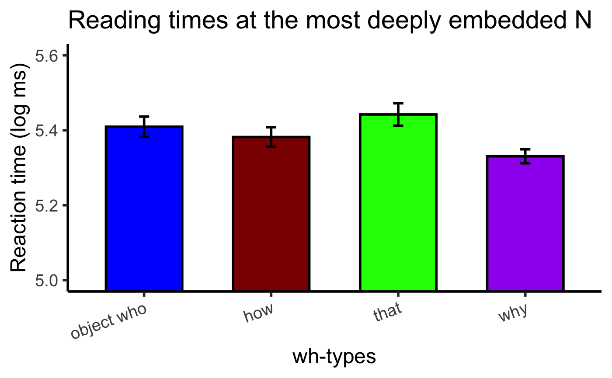
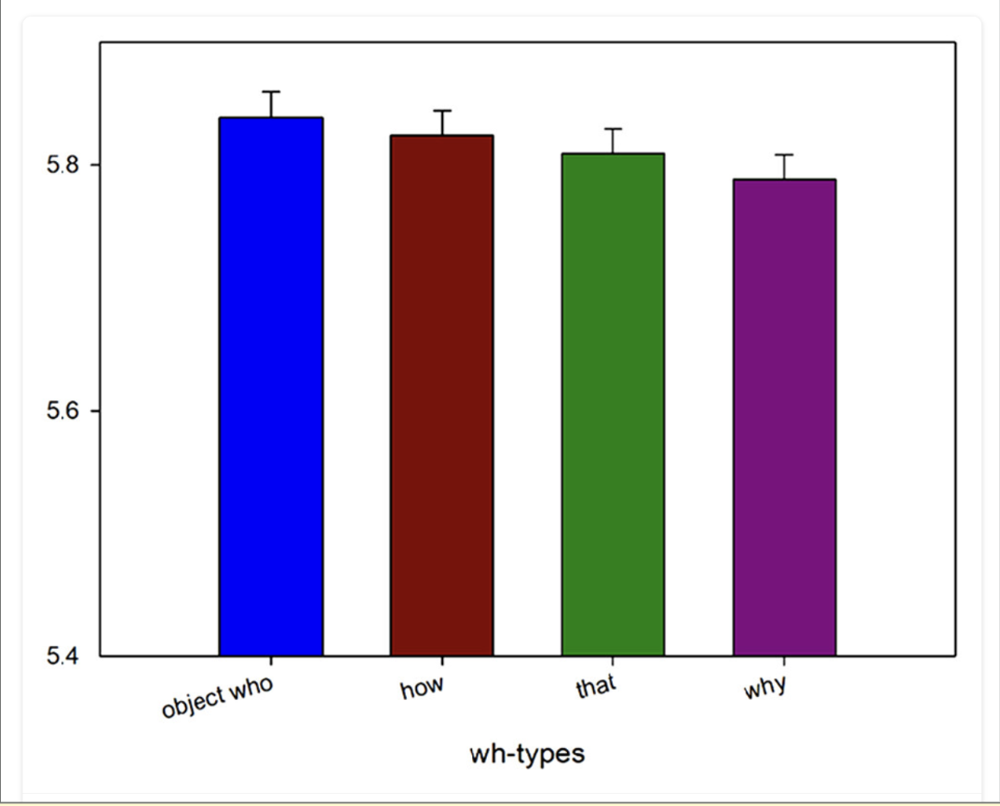
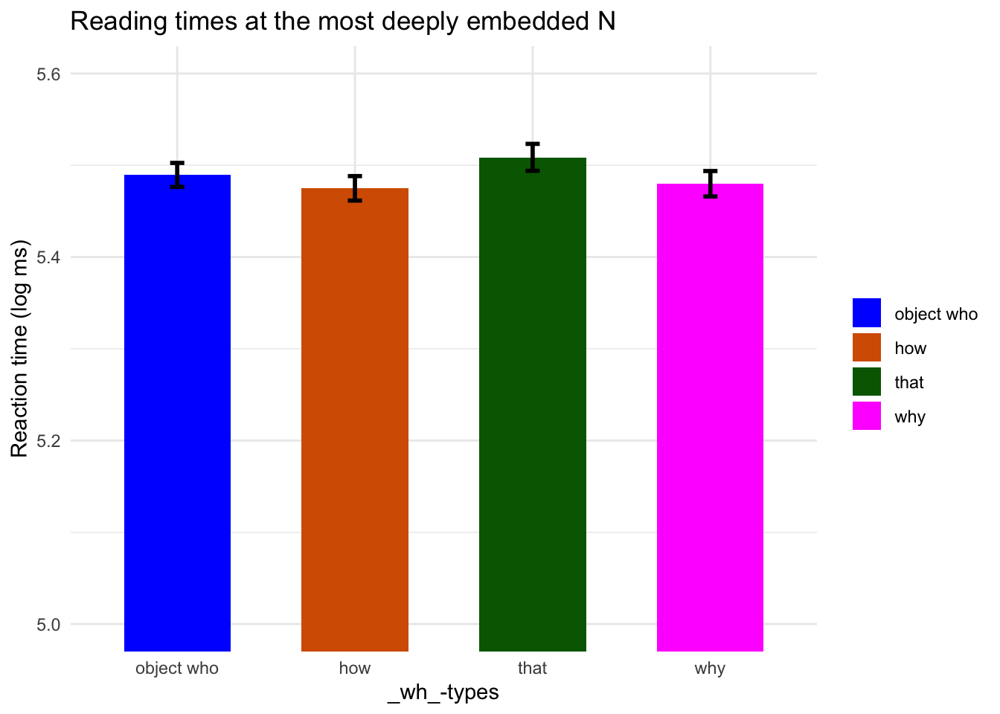
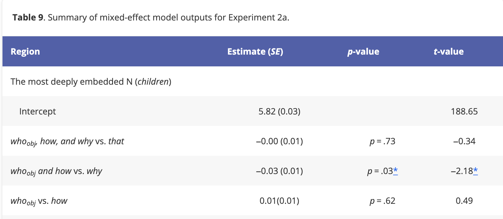
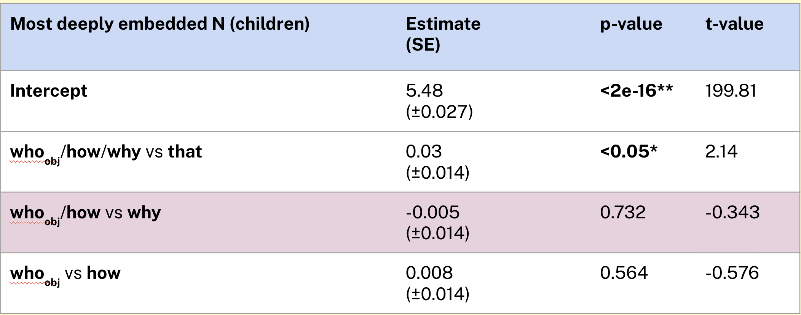
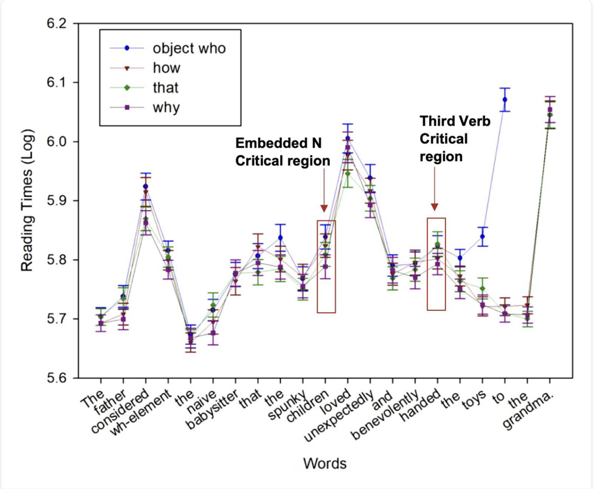
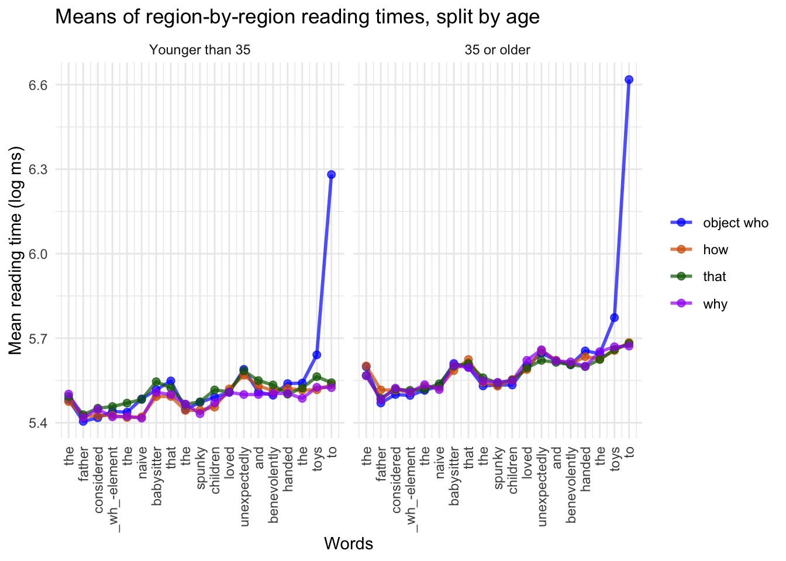

Kim et al. (2024) present experimental evidence that different wh-filler-gap dependencies are associated with different processing costs during comprehension. More specifically, the experimenters presented Northwestern university students (n=64) with self-paced reading tasks of various wh-filler-gap dependencies, finding that dependencies with longer filler-gap dependencies (e.g. whoobj, how) are associated with longer reading times than those with shorter filler-gap dependencies (e.g. that~, why). They take these findings to be direct consequences of Gibson’s (1998) Dependency Locality Theory, in which the length of a filler-gap dependency predicts processing costs in both storage and integration.
This study replicates Experiment 2a of Kim et al. (2024), which contained a set of stimuli with two embedded relative clauses within the wh-dependency. Both the procedure and stimuli from Experiment 2a are directly copied. In doing this replication study, we’re specifically looking for whether, at the most deeply embedded N in the stimulus sentence, the whoobj and how dependencies will be associated with longer reading times than the why and that dependencies.
Methods
Given Kim et al.’s (2024) original estimate 0.03 (SD = 0.01) with n = 64, we would need a sample size of n=56 for 80% power, n=75 for 90% power, and n=93 for 95% power.
Planned Sample
80 participants, sampled from Prolific.
Materials
Stimuli consisted of 24 sentences for each wh-type (whoobj, how, why, that), as well as 74 filler sentences.
An example of one of the sentences is shown in (1). Bolded is the wh-word (whoobj), and italicized is the word at which reading time is measured (children, the deepest N in the sentence).
The father considered who the naive babysitter that the spunky children loved unexpectedly and benevolently handed the toys to __.
Procedure
We follow the experimental procedure directly from Kim et al. (2024), as quoted below:
“Stimuli were presented on a desktop PC using Linger software (Rohde, 2003) employing a self-paced word-by-word moving window paradigm (Just et al., 1982). Each experimental trial was initiated with dashes that masked words in the sentence. As participants pressed a button to move forward, each subsequent word appeared. Participants were instructed to read the sentences as they would normally read and to answer a comprehension question after reading each sentence. The yes/no comprehension question asked participants to press the F (yes) or J (no) keys. An example of a comprehension question is, Was the word “toys” mentioned in the story?. After receiving feedback on their responses, participants pressed the spacebar to proceed to the next experimental item. Six practice items were presented at the beginning of the experiment to allow participants to grasp the experimental format. The experiment took each participant approximately 30–45 mins to complete.”
Analysis Plan
We also follow the analysis plan of Kim et al. (2024):
“Data were analysed using linear mixed-effect regression models performed with the lme4 package in R version 3.2.3 (Baayen, 2008; Baayen et al., 2008; Bates et al., 2014). Each model included Helmert coding, where at the deeply embedded N, we compared (a) whoobj, how, why with that as a baseline; (b) whoobj and how with why; and (c) whoobj with how. At the adverb before the third verb and the third verb region, we compared (a) whoobj, how, why with that as a baseline; (b) whoobj with how and why and (c) why with how. At this region, we compared whoobj with how and why because the adverb already signals the introduction to the VP at which how should be integrated. Thus, we expected how and why to be read similarly unlike whoobj which induces storage costs. All models contained the maximal random effects structure that fit the data (Barr et al., 2013), including random intercepts for participants and items, and random slopes for fixed effects if the model successfully converged. In cases where the model did not converge, random effects containing the smallest variance were removed in a step-wise manner. Participants with an accuracy lower than 68% were excluded (Kim et al., 2019, 2020). The reading times were log-transformed (Box & Cox, 1964). Two regions of interest were identified in this study. The first critical region was the most deeply embedded N (embedded N critical region: children in Table 8) where the processing complexity due to storage was expected to be the highest. We were also interested in one word following the most deeply embedded N critical region (embedded N spill-over region), given that effects arising in the critical region often spill over to one region following, that is, the spill-over region (Mitchell, 1984, 2018; Vasishth, 2006). The second critical region was the adverb region before the third verb, the third verb (e.g., benevolently and handed in Table 8) and the word following it (third verb spill-over region).”
Key feature of interest: effect size on reading time in reading a whoobj or how dependency over a that or why dependency at the most deeply embedded N
Differences from Original Study
The primary difference from the original study is the sample, which we will collect from Prolific. This should not be associated with a different prediction.
Pilot A Results
Below are the reading times at the most deeply embedded N across wh-types – i.e. Kim et al.’s (2024) main variable of interest.

Pilot A results for the reading times at the most deeply embedded N across wh-types
Methods Addendum (Post Data Collection)
Actual Sample
The sample consisted of 70 partipants recruited from Prolific. Of the 70 participants, 39 were female and 30 were male. The median age was 34.
Differences from pre-data collection methods plan
None
Results
Confirmatory analysis
Reading times at most deeply embedded N
First we replicate Kim et al.’s (2024) main finding (their Experiment 2a): namely that at the most deeply embedded NP, there is a clear asymmetry in reading times across wh-types, predicted by the structural height of the wh-element.
Kim et al.’s (2024) results are shown in the graph below. Here we see a clear descending hierarchy in wh-types, whoobj > how > that > why, which follows what generativist syntax predicts.

Reading times acrosss different wh-types at the most deeply embedded N. (Kim et al. 2024, Figure 5)
By contrast, in our replication study, we do not find any clear descending hierarchy between the wh-types.
agr %>%mutate(``= whword) %>%ggplot(aes(x =``, y = y, fill =``)) +geom_bar(stat ="identity", width =0.6, linewidth =1) +geom_errorbar(aes(ymin = y - se, ymax = y + se ), width =0.08, linewidth =1 ) +scale_fill_manual(values =c("object who"="blue","how"="#D55E00","that"="darkgreen","why"="magenta")) +coord_cartesian(ylim =c(5, 5.6)) +labs(x ="_wh_-types", y ="Reaction time (log ms)") +ggtitle("Reading times at the most deeply embedded N") +theme(legend.position ="none",axis.text.x =element_text(angle =20,hjust =1 ),axis.line =element_line(linewidth =1),axis.ticks =element_line(linewidth =1) ) +theme_minimal()

While, in the original study, Kim et al. (2024) were unable to find significant effects between individualwh-types, they do identify significant effects when clustering wh-types together, as shown in their Table 9:

Summary of mixed-effect model outputs. (Kim et al. 2024, Table 9)
We, by contrast, do not find any significant effects when running a mixed-effect model.

Mixed-effect model results. Highlighted in red is the effect that Kim et al. (2024) reported significant.
Reading times at each word
Finally, we look at reading times at every word in the stimulus, rather than just the most deeply embedded N. Compared to the original study, we see that reading times across each word in the sentence follows roughly the same trajectory: there is one peak in the middle and one in the end. But the contrast between wh-types, which was already low in the original study, is virtually nonexistent in the replication.

Original study’s report of reading times per word. (Kim et al. 2024, Figure 4)
To assess whether this failure of replication was due to a different sample demographic, we split the data by age, namely into two groups, age < 35 and age >= 35 (where 35 is the median age).
agr %>%mutate(``= whword) %>%ggplot(aes(x = word_index, y = y,color =``,group =``)) +geom_line(linewidth =1, alpha =0.7) +geom_point(size =2, alpha =0.7) +scale_color_manual(values =c("object who"="blue","how"="#D55E00","that"="darkgreen","why"="purple")) +theme(axis.text.x =element_text(angle =90,vjust =0.5,hjust =1 ) ) +scale_x_continuous(breaks =seq_along(words) -1,labels = words ) +ggtitle("Means of region-by-region reading times, split by age") +labs(x="Words", y="Mean reading time (log ms)") +facet_wrap(vars(is_old))

At the most deeply embedded N (children), the contrast between wh-elements is slightly greater for participants younger than 35 than those older than 35. In fact, the younger participants pattern more closely to Kim et al.’s (2024) findings, with the why reading times being the lowest at the spillover region `unexpectedly’.
Discussion
Summary of Replication Attempt
Clearly, we failed to replicate the main effects reported by Kim et al. (2024). While the original study detected a significant effect between the whoobj and how groups vs. the why group, we did not detect any significant effects.
Commentary
We can turn to two potential reasons to explain why we failed to replicate the original study’s effect. First, our study used a markedly different sample demographic: while the original study had a sample of 64 Northwestern students, our study’s sample was collected online, and therefore was far more heterogeneous. For one, the median age of the sample was significantly older. Indeed, when crosscutting the data by median age (34), we find that the younger participants patterned closer to the original study’s findings than the older participants.
A second reason for why we failed to replicate Kim et al.’s (2024) main effect was that their effect size was not very strong to begin with. Their effect size — for contrasting the whoobj and how groups vs. the why group — was only 0.03 log ms. Additionally, this coefficient was only one of several coefficients that they used to test their hypothesis. Considering that none of their other coefficients were significant, this raises the question of whether the reason they found a significant effect was due to p-hacking or p-hacking-adjacent practices.
Indeed, we can ask if, had we replicated the original effect, we truly would have offered strong evidence that the structural height of a wh-element predicts processing costs. The most convincing piece of evidence for this would have been to find significant effects between each individualwh-type (e.g. whoobj > how > why), rather than between groups of wh-types (e.g. whoobj/ how > why). But not even the original study found such effects to be significant. Thus, while we failed to replicate the main effect of Kim et al. (2024), we are even further away from demonstrating the hypothesis that Kim eta l. (2024) propose.
Finally, we can loosely speculate some reasons for why the younger participants in our study (age < 35) displayed stronger reading time asymmetries between wh-types than the older participants. In general, the average reading time of younger participants per word was lower than older participants. This may suggest that older participants experienced greater cognitive load over the course of the task, which may have masked any differences between the different wh-items. In other words, if there was already a high floor in the processing required to read a given word, the relatively lower processing difficulty associated with the why items may be obscured. Nonetheless, it is worth noting that we should not expect processing asymmetries between wh-items to be contingent on age, given that it reflects general syntactic knowledge of English.
Kim, N., Wellwood, A., & Yoshida, M. (2024). Processing wh-filler-gap dependencies. Quarterly Journal of Experimental Psychology, 77(12), 2391-2417.